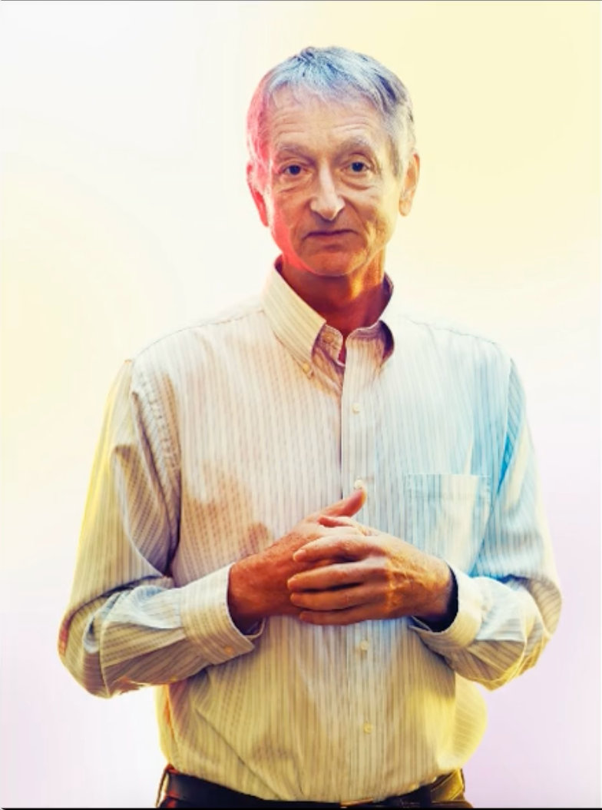
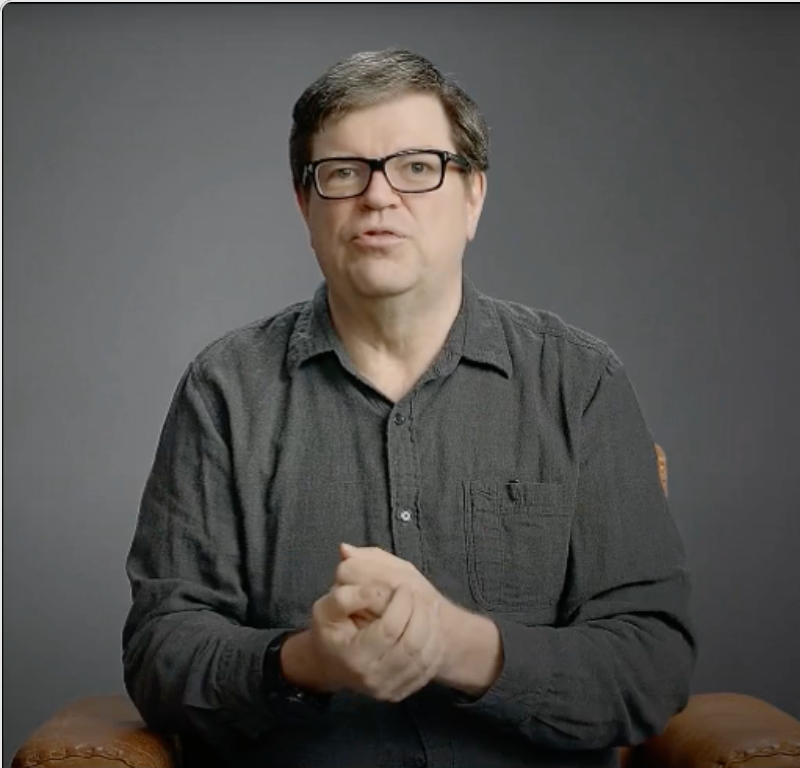

Audio-Driven Demos on Open-set Test Images
CyberHost achieves zero-shot human body animation on open-set test images in audio-driven settings.
* All test images were sourced from the internet or generated via AIGC. If there are any copyright issues, please contact lingaojie@bytedance.com to have the demo taken down.





Audio to Video Comparison with Baselines
Compare to DiffGesture & MimicMotion
Compare to Vlogger
*Images and audio are provided by Vlogger homepage
Video to Video Comparison with Baselines
CyberHost supports video-driven body reenactment and surpasses current state-of-the-art methods in terms of generation quality.